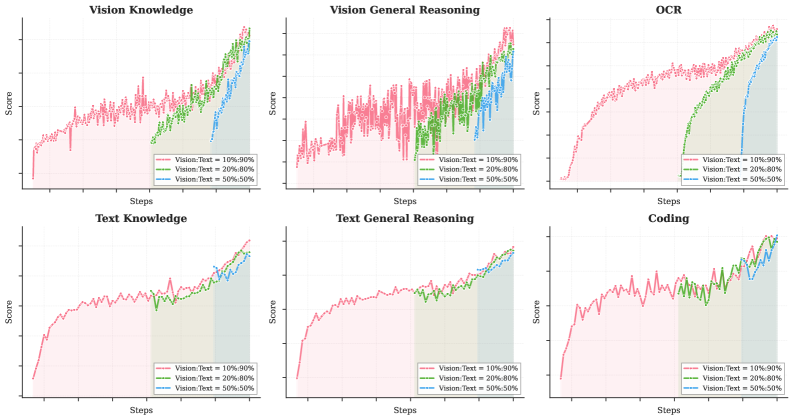
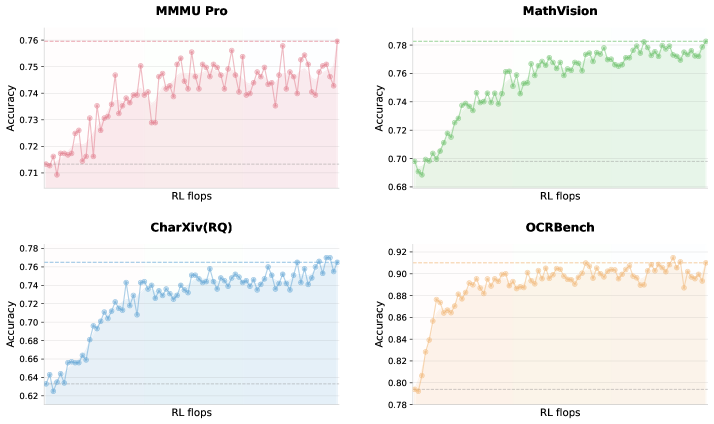
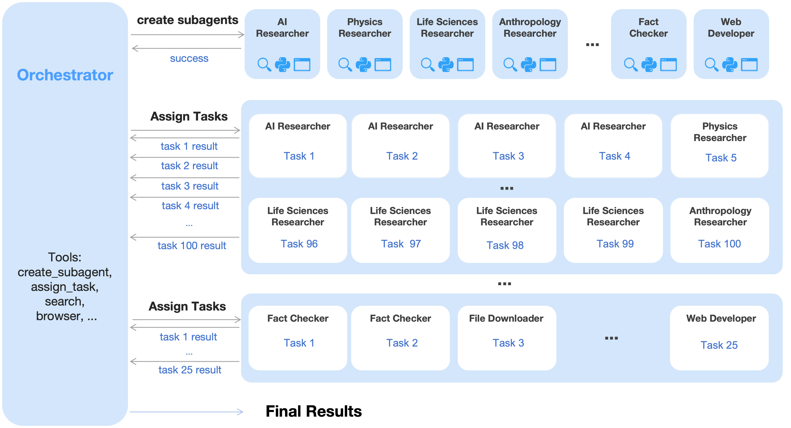
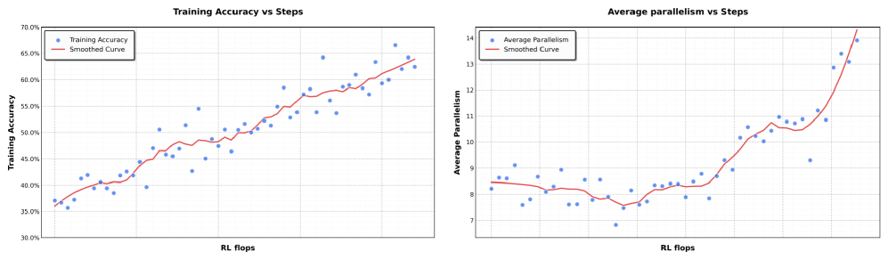
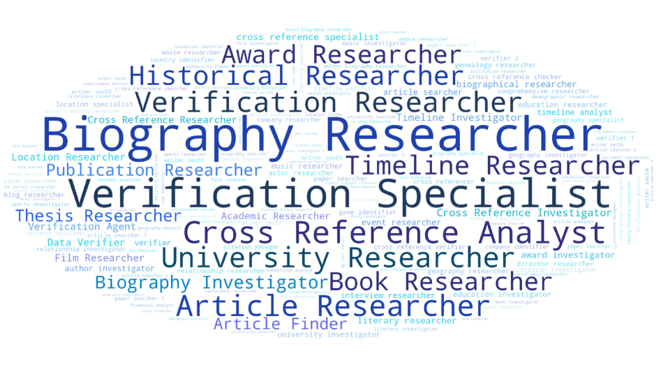
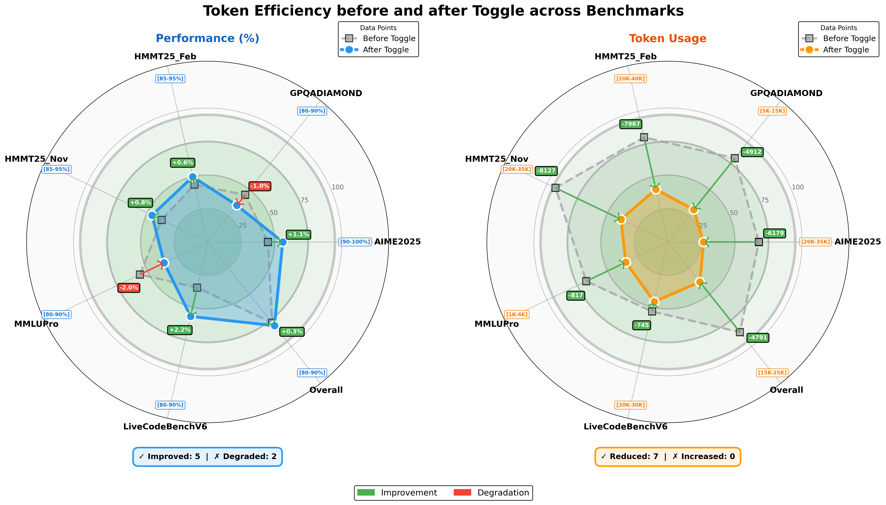
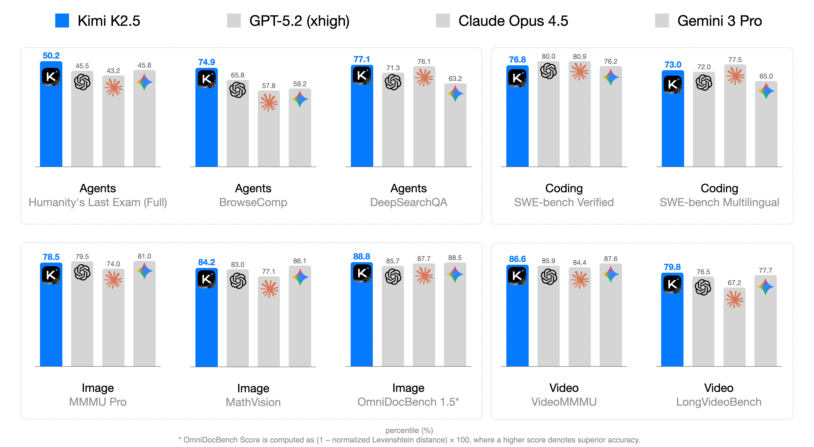
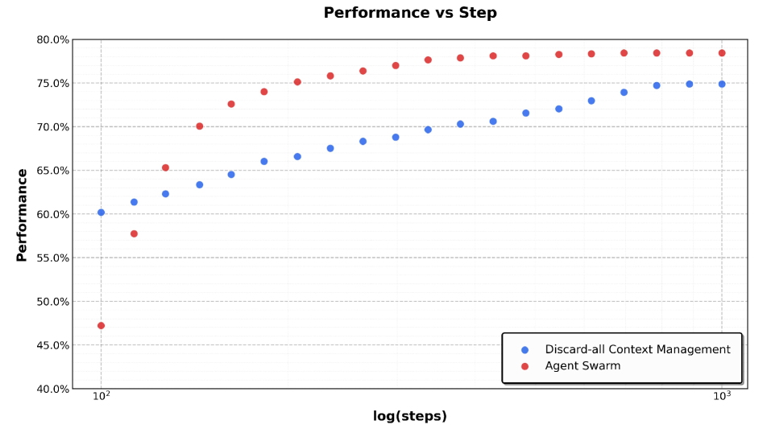
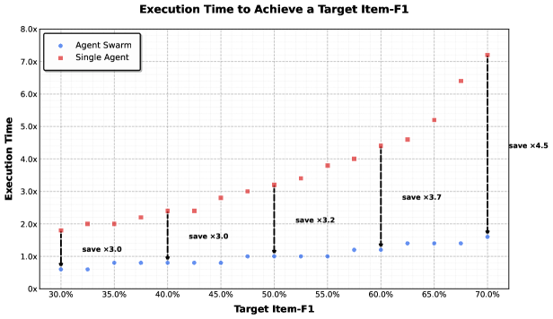

Kimi K2.5: Visual Agentic Intelligence
一句话：K2.5 在 Kimi K2 这个万亿参数文本基座上，额外灌入约 15T 图文混合 token，做了两件事——① 让文本与视觉联合优化、互相增强；② 引入 Agent Swarm（智能体集群），让一个可训练的「指挥官」把复杂任务拆成异构子任务、动态拉起最多约 100 个子智能体并行干活。结果：编码、视觉、推理、智能体任务全面 SOTA，长任务延迟最多降到原来的 1/4.5。
本页基于 arXiv HTML 全文（v1，2026.02）的正文与原始图表构建。术语首次出现给出英文原词，便于对照原文。下文图均取自原报告并配中文说明。
大模型正快速朝智能体智能（agentic intelligence）演进：能把复杂问题拆成多步计划，再交替「推理 + 调用工具」一步步执行。但报告点出两个绕不过去的瓶颈：
报告没有罗列长篇 related work，而是把要对比的几条路线讲清楚，正好对应它自己的两个贡献。先建立画面感：
做法：先把语言模型训得差不多，再在后期用高视觉比例做 continual training，快速「贴上」多模态能力。
卡在哪：把视觉视为 add-on 容易造成模态冲突——要么牺牲语言、要么牺牲视觉；而且视觉 SFT 数据稀缺、多样性差，常把视觉推理限制在简单图表和 crop/rotate/flip 这类原始操作。
与本文关系：K2.5 反其道而行——早期、低比例地全程混入视觉，并用 zero-vision SFT 绕开视觉数据稀缺问题。
做法：单一上下文里串行地推理、调用工具，靠拉长步数（hundreds of steps）应对复杂任务。
卡在哪：推理时间随步数线性增长，延迟难以接受；单个上下文不断膨胀，最终耗尽推理深度与工具预算，复杂任务做不动。
与本文关系：Agent Swarm 把「一条长链」改成「多个并行短链」，用 critical steps（关键路径）而非总步数来衡量代价。
做法：在推理时对上下文做事后截断——隐藏工具结果、摘要化、或干脆丢弃累积历史，以控制 token 用量。
卡在哪：这类方法本质是被动反应（reactive），常常牺牲结构信息或中间推理痕迹。
与本文关系：Agent Swarm 提供一种主动（proactive）的替代——把长任务拆成语义隔离的子任务，让上下文「分片（sharding）」而非「截断」。
K2.5 的第一个核心论点是：文本与视觉的联合优化能同时增强两者、并避免冲突。这条主线由三个反直觉的发现 + 一个统一的视觉编码器架构支撑。
核心设计问题：在固定的图文 token 预算下，什么样的「视觉注入时机 + 视觉比例」最优？传统智慧说「后期、高比例」。但 K2.5 的消融实验给出相反答案——早期融合（early fusion）+ 低视觉比例反而最好，且视觉比例对最终多模态表现影响很小。
| 注入时机 | 视觉:文本 | 视觉知识 | 视觉推理 | OCR | 文本知识 | 文本推理 | 代码 |
|---|---|---|---|---|---|---|---|
| Early（早） | 10% : 90% | 25.8 | 43.8 | 65.7 | 45.5 | 58.5 | 24.8 |
| Mid（中） | 20% : 80% | 25.0 | 40.7 | 64.1 | 43.9 | 58.6 | 24.0 |
| Late（晚） | 50% : 50% | 24.2 | 39.0 | 61.5 | 43.1 | 57.8 | 24.0 |
原论文 Table 1：固定总预算下，早期 + 低视觉比例那一行（高亮）几乎在所有维度上领先。所以 K2.5 选择全程以恒定的低视觉比例混合训练，让模型在长期协同优化中自然长出均衡的多模态表征。

一句话总结：与其后期猛灌视觉，不如早期细水长流——多模态表征在长期共训中更均衡。
预训练后的视觉模型并不会自动「看图用工具」，这给多模态 RL 出了个冷启动（cold-start）难题。传统解法是人工标注视觉 CoT 数据，但这类数据少、多样性差。K2.5 的妙招是 zero-vision SFT：
zero-vision SFT 之后，再用结果奖励（outcome-based RL）在「必须看图才能答对」的任务上精炼：视觉定位与计数、图表/文档理解、视觉关键的 STEM 题。随训练投入（RL FLOPs）增加，视觉能力持续提升（见下图）。

一句话总结：视觉能力不是靠堆视觉 SFT 数据「教」出来的，而是靠纯文本激活 + 长程 RL「练」出来的。
最让人意外的是跨模态迁移（cross-modal transfer）：做完视觉 RL 后，去测纯文本基准，成绩不降反升。
| 纯文本基准 | 视觉 RL 之前 | 视觉 RL 之后 | 提升 |
|---|---|---|---|
| MMLU-Pro | 84.7 | 86.4 | +1.7 |
| GPQA-Diamond | 84.3 | 86.4 | +2.1 |
| LongBench v2 | 56.7 | 58.9 | +2.2 |
原论文 Table 2：视觉 RL 改善了「结构化信息抽取」类问题的校准（calibration），让模型在「类视觉但其实是纯文本」的问题（计数、OCR 式抽取）上更有把握。文本能力没有任何可观察的退化。
支撑上述训练的，是一个原生分辨率的视觉编码器 MoonViT-3D（继承自 Kimi-VL，初始化自 SigLIP-SO-400M）。它把「patch n' pack」的思路从空间推广到时间：
这是报告的招牌。与其把任务当成一条推理长链，K2.5 通过动态任务拆解 + 子智能体实例化 + 并行子任务调度发起一个「智能体集群」。下面这张架构图是全节最重要的图：

create_subagent（创建子智能体）、assign_task（派发任务）、search、browser 等。success。task N result 回传给指挥官（左侧一列箭头）。一句话总结：指挥官学会「创建谁、派什么、何时并行、如何汇总」，子智能体只管埋头执行——分工明确，所以好训。
点「下一步」，一阶段一阶段看清一个 swarm 从接到任务到给出答案的全过程：
create_subagent(name, role, tools)，从固定的中间策略 checkpoint动态拉起一批冻结子智能体，每个带专属角色与工具子集（搜索 / 代码 / 浏览）。assign_task 把子任务派出去，最多约 100 个子智能体并行运行。每个子智能体在独立、隔离的本地上下文里推理、调用工具，互不污染。训练这套并行编排用的是 Parallel-Agent Reinforcement Learning（PARL）。它刻意采用解耦架构：可训练的指挥官 + 从固定中间 checkpoint 实例化的冻结子智能体。这样设计是为了绕开端到端协同优化的两个老大难：
并行编排的反馈是延迟、稀疏、非平稳的，所以奖励要专门设计来对抗两种退化行为：
并行场景下，「总步数」不再等于「耗时」。报告类比计算图的关键路径（critical path），定义关键步数——每个阶段的耗时由该阶段跑得最久的那个子智能体决定：
用关键步数（而非总步数）来约束训练与评测，直接激励有效并行：只有把活均衡地铺开、缩短最长分支，才能降低端到端延迟；盲目堆并发或堆总工作量都没用。

一句话总结：并行度曲线是「指挥官学会派活」的最直接证据——它越训越愿意、也越会并行。
子智能体并非提前定义好，而是指挥官根据 query 动态实例化——它会推断「需要几个、什么时候要、什么专长」。于是一个异构的智能体群会自然涌现：

一句话总结：角色清单不是写死的配置，而是指挥官「看任务下菜」临时造出来的。
上面两个贡献都建立在一套完整的训练流程上。这里轻量过一遍「基座 → 预训练 → 后训练 → 基建」，不必逐一深究，知道每块在做什么即可。
K2.5 的地基是 Kimi K2：万亿参数 MoE（1.04T 总参 / 32B 激活，384 专家选 8，MuonClip + QK-Clip 稳训），在 15T 文本 token 上预训练。在此之上，K2.5 用约 15T 图文混合 token 走三个预训练阶段：
测试时扩展（test-time scaling）拿算力换推理质量，但死扣预算会导致「长度过拟合」——模型学会截断推理，反而用不上更多算力。Toggle 是个交替训练启发式：每 m 轮在两个相位间切换——Phase 0 限预算（仅当该题平均正确率超阈值 λ 才施加，避免过早牺牲质量）与 Phase 1 放开扩展（鼓励用满算力）。

一句话总结：Toggle 让模型「该长则长、能短则短」，省下两三成 token 还几乎不掉分。
除了主线，有几处取舍与发现值得单独拎出来——它们往往比 benchmark 数字更能帮你判断这套方法适不适合自己的场景。
传统智慧认为多模态是语言之上的 add-on，应后期高比例注入。K2.5 的消融却显示视觉比例对最终表现影响很小，而早期低比例反而最优。
启发：把视觉当作长期协同优化的一等公民，而非临门一脚的补丁。
因为联合预训练已建立强视觉-文本对齐，能力能自然跨模态迁移；此时再塞入多样性差的人工视觉轨迹，反而损害泛化。
边界：这条结论依赖「预训练阶段已做好图文对齐」——否则纯文本激活未必接得住。
分析认为视觉 RL 改善了「结构化信息抽取」类问题的校准，降低了「类视觉」查询上的不确定性，从而跨模态泛化到文本推理。
言下之意：模态之间不是零和——对齐做得好，一种模态的进步能外溢到另一种。
子智能体输出被当作「环境观测」、不参与梯度，从而避免功劳分配模糊与训练不稳。两个辅助奖励（rparallel/rfinish）再分别防住串行坍缩与虚假并行。
价值：这是一种很务实的「先把能训稳的部分训稳」的工程哲学。
把每阶段代价定义为「主步数 + 最长子智能体步数」，奖励信号天然偏向均衡拆解，而非盲目堆并发或堆总工作量。
启发：评测并行系统时，指标选错（总步数）会把模型带偏。
死扣预算会让模型学会截断推理、用不上更多算力（length-overfitting）。Toggle 用交替优化把「会推理」和「会省」两个目标调和起来。
边界：限预算只在「该题平均正确率超阈值」时才施加，避免过早牺牲质量。
一句话：Kimi K2.5 在推理、编码、视觉、视频、智能体等多个领域取得 SOTA 或接近顶尖闭源模型的成绩；而 Agent Swarm 在广搜类任务上既更准又更快。先看几个最核心的数字：

一句话总结：这是全文的「成绩单」——一眼看清 K2.5 在编码、视觉、视频、智能体上的整体格局。
这是报告最有说服力的对照：同一个 K2.5，开了 Agent Swarm 后在三个广搜/深研基准上全面跃升，甚至反超 GPT-5.2 Pro。
| 基准 | K2.5 Agent Swarm | K2.5 单智能体 | Claude Opus 4.5 | GPT-5.2 Pro |
|---|---|---|---|---|
| BrowseComp | 78.4 | 60.6 | 37.0 | 77.9 |
| WideSearch (Item-F1) | 79.0 | 72.7 | 76.2 | — |
| In-house Swarm Bench | 58.3 | 41.6 | 45.8 | — |
原论文 Table 6：BrowseComp +17.8（60.6→78.4，超 GPT-5.2 Pro 77.9）、WideSearch +6.3（72.7→79.0，超 Claude Opus 4.5 76.2 创 SOTA）、内部 Swarm Bench +16.7——专为奖励并行拆解设计的任务上提升最猛。

一句话总结：与其等上下文爆了再删，不如一开始就把它拆成互不干扰的小块——主动优于被动。

一句话总结：任务越复杂，并行省下的时间越多——这正是 Agent Swarm 的意义所在。
| 基准 | Kimi K2.5 | Claude Opus 4.5 | GPT-5.2 (xhigh) | Gemini 3 Pro | DeepSeek-V3.2 |
|---|---|---|---|---|---|
| AIME 2025 | 96.1 | 92.8 | 100 | 95.0 | 93.1 |
| GPQA-Diamond | 87.6 | 87.0 | 92.4 | 91.9 | 82.4 |
| MMLU-Pro | 87.1 | 89.3 | 86.7 | 90.1 | 85.0 |
| HLE-Full（带工具） | 50.2 | 43.2 | 45.5 | 45.8 | 40.8 |
| SWE-Bench Verified | 76.8 | 80.9 | 80.0 | 76.2 | 73.1 |
| LiveCodeBench (v6) | 85.0 | 82.2 | — | 87.4 | 83.3 |
| BrowseComp（带上下文管理） | 74.9 | 57.8 | 59.2 | 67.6 | — |
| Seal-0 | 57.4 | 47.7 | 45.0 | 45.5 | 49.5 |
| MMMU-Pro | 78.5 | 74.0 | 79.5 | 81.0 | — |
| MathVision | 84.2 | 77.1 | 83.0 | 86.1 | — |
| VideoMMMU | 86.6 | 84.4 | 85.9 | 87.6 | — |
数学/编码与一线闭源并肩；HLE（带工具）、LiveCodeBench、BrowseComp、Seal-0、MathVision、VideoMMMU 等多项领先或拿到全局最佳（蓝色高亮）。完整表见原文 Table 4（含 OCRBench 92.3、LVBench 75.9、OSWorld-Verified 63.3 等）。
报告的结论很克制：可扩展、通用的智能体智能，可以靠「文本×视觉联合优化 + 并行智能体执行」来实现。这套思路的适用边界值得留意：